HTTP
Brief History of HTTP
In 1989, Tim Berners-Lee was working at CERN (Switzerland research lab) and needed to exchange information between scientists. At the time, protocols like FTP existed for transferring files over the Internet. However, a file will often have links to other resources on the Internet. His goal was to create a protocol and file format that would allow linking pages to each other and fetching those pages.
The original HTTP specification was given version number HTTP/0.9 and released in 1991. HTTP/1.0 was standardized in 1996, and HTTP/1.1 was standardized in 1997. Unless otherwise specified, this section is referring to HTTP/1.1, since this is the most common version in use today. More recent versions do exist (see end of this section), but the fundamentals of the protocol have stayed the same for over 20 years.
HTTP Basics
HTTP runs over TCP. Two people who want to send data over HTTP will first start a TCP connection. Then, they can use its bytestream abstraction to reliably exchange arbitrary-length data. Hosts running HTTP don’t have to worry about packets being reordered, dropped, and so on.
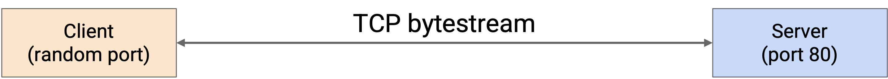
HTTP is a client-server protocol. We designate one person as the client (e.g. you, the end user), and one person as the server (e.g. Google, a bank website, etc.). The client is almost always running HTTP in a web browser (e.g. Firefox or Chrome), though HTTP can also be run in other ways (e.g. directly on the terminal).
When forming an HTTP connection, the server must listen for connection requests on the well-known, constant port number 80. (HTTPS, a more recent secure version, uses port 443). The client can choose any random ephemeral port number to start the connection, and the server can send replies to that port number.
HTTP is a request-response protocol. For each request that the client sends, the server sends exactly one corresponding response.
HTTP Requests
The HTTP request message is formatted in human-readable plaintext, which means you can type raw HTTP requests into the terminal. The request contains three parts: method, URL, version, and optional content.
The message ends with a newline (technically, CRLF, look it up if curious), which you can think of as the user pressing the Enter key after typing in the HTTP request in their terminal.
The version number specifies what version of HTTP you’re using, e.g. HTTP/0.9, HTTP/1.0, HTTP/1.1, etc.
The requested URL identifies a resource on the server. You can think of the URL as the filepath of what you’re trying to retrieve from the remote server. For example, in the URL http://cs168.io/assets/lectures/lecture1.pdf, we’re trying to retrieve a file in the assets/lectures folder, named lecture1.pdf, on the cs168.io remote server. (Servers aren’t required to work this way, but it’s a useful intuition to have.)
The method identifies what action the user wants to perform. Initially, HTTP only had one method, GET, which allows a client to retrieve a specific page (indicated by the URL) from the server.
Later, HTTP was extended to add other methods. Notably, the POST method was added, which allows the client to supply information to the server as well. For example, if the user fills out a form and clicks Submit, that data is sent to the server in a POST request.
Some less-used methods exist as well. HEAD retrieves the headers (metadata) of the response, but not the actual content of the response. Other methods like PUT, CONNECT, DELETE, OPTIONS, PATCH, and TRACE extend HTTP into a protocol that lets the user interact with content on the server. The user can now make changes to the content, as opposed to the original design, where the user could only retrieve content. These extra methods make HTTP very flexible for all sorts of different application.
Note that with other methods like POST, we still have to provide a URL to indicate how to interpret the data we’re sending. On a bank website, sending a name to the /send-money URL will probably do something different from sending that same name to the /request-money URL.
For GET requests, the content of the request is usually empty, since we’re asking for a page from the server and not sending any of our own information. By contrast, for a POST request, the content of the request contains the data we want to send to the server.
HTTP Responses
Each HTTP request corresponds to one HTTP response. The response is also in human-readable plaintext, which means you can read raw HTTP responses in the terminal. The response contains four parts: version, status code, optional message, and content.
As before, the version specifies the version of HTTP being used.
The content is where the server would put, for example, the page that the user requested in a GET request.
The status code is a number that allows the server to indicate the result of the client’s request. Each status code has a corresponding human-readable message.
The status codes are classified into various categories according to numeric values:
100 = Informational responses.
200 = Successful responses. 200 OK indicates a successful request, where the definition of success depends on the method of the request and the application using HTTP (remember, status codes are in every response, regardless of what method, GET/POST/etc., the request was). 201 Created indicates that the request succeeded and some new resource was created. This is usually seen in POST or PUT requests.
300 = Redirection messages. These allow the server to tell the client that they should go look for the resource (specified by the URL) somewhere else. Two common ones are 301 Moved Permanently and 302 Found (a weird name for moved temporarily). Sometimes, the status code itself doesn’t provide enough context (as seen with these redirects). Therefore, the response will also contain additional information about where the resource has moved (e.g. another URL).
The use of more specific status codes allows the client to determine its future behavior based on the code. For example, 301 Moved Permanently tells the client to stop looking in the original location, while 302 Found (moved temporarily) might tell the client to come back and check again later.
400 = An error attributable to client action. 401 Unauthorized says that the client is not allowed to access this content, but if they authenticate their identity (e.g. log in), then they might be able to access the content. 403 Forbidden says that the client is authenticated, and the server knows their identity, but they’re still not allowed to access the content.
Again, using more specific codes lets the client determine future behavior. 401 Unauthorized might cause the client browser to show a login window, while 403 Forbidden might cause the client browser to show an error message (since the user has already logged in).
500 = An error attributable to server action. 500 Internal Server Error and 503 Service Unavailable are common. There’s not much the client can do about these errors, except maybe try again later.
Some error codes like 404 (File Not Found) and 503 (Service Unavailable) are very recognizable.
Sometimes, the appropriate status code to use can be ambiguous. For example, if we sent an HTTP request to Google using version 0.9, the appropriate request might be 505 (HTTP Version Not Supported). Instead, Google responds with 400 (Bad Request). Usually, the goal is to provide an error from the correct category (e.g. 400 and 500 indicate errors) that elicits the correct behavior from the client.
HTTP Headers
If the client has additional information they’d like to send to the server, they can include additional metadata called headers. In HTTP/1.1, no headers are mandatory, so it’s legal to not include any (though the server/client might expect a header and error).
For example, the Location header can be used in HTTP 300 responses to indicate where the resource has moved.
Sometimes, the header information is optional. For example, the User-Agent header in the request lets the client tell the server about the client browser or program (e.g. Firefox or Chrome). This could allow the request to be processed differently depending on the header field (e.g. whether the user is on Chrome or the terminal).
Other times, header information is more critical. For example, Content-Type tells us whether the payload is an HTML page, image, video, etc. This tells the browser how to display the HTTP response. If a server is hosting multiple websites, the Host header can be used in requests to specify what website to request.
Some headers are relevant in requests. These allow the client to pass information to the server. For example, the Accept header lets the client tell the server which content type the client is expecting (e.g. HTML for human-readable pages, JSON for machine-parsable data). The User-Agent header indicates the type of client being used, and the Host header indicates the specific host being accessed (in case a server is hosting multiple websites). The Referer header indicates how the client made the request (e.g. if they clicked on a link from Facebook to make this request).
Other headers are relevant in responses. Remember, headers are metadata about the content, not the content itself. For example, Content-Encoding tells us how the bits of the response should be interpreted (e.g. Unicode/ASCII for human-readable text, or gzip for a compressed file). The Date header tells us when the server generated the response.
Some headers are representation headers, which are used in both requests and responses to describe how the content is represented. For example, the Content-Type header specifies the type of the document (e.g. text, image) and can be in POST requests, or GET responses. Representation headers let us carry different types of content over HTTP, which allows the protocol to be generalized and usable by all sorts of applications.
HTTP Examples
In your terminal, you can type telnet google.com 80 to connect to Port 80 (HTTP) on Google’s server. The terminal will then allow you to type a raw HTTP request, with headers, like:
GET / HTTP/1.1
User-Agent: robjs
This is a GET request for the root page on the server, running on HTTP version 1.1. The User-Agent header indicates the type of client we’re using.
Likewise, the response is also human-readable.
HTTP/1.1 200 OK
Date: Sat, 16 Mar 2024 18:33:08 GMT
Content-Type: text/html; charset=ISO-8859-1
<!doctype html><html lang="en"><head><meta content="Search the world's information, including webpages, images, videos and more. Google has many special features to help you find exactly what you're looking for." name="description">...
The HTTP/1.1 200 OK tells us the version, and the status code (200) with its corresponding message (OK). There are two headers attached, the date of the response, and the content type. Then, the content contains the raw HTML of the webpage. If we opened this HTML in a web browser, it would look like an actual webpage.
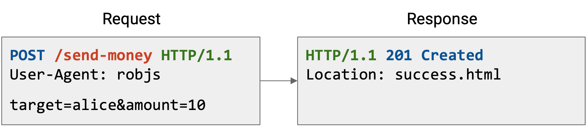
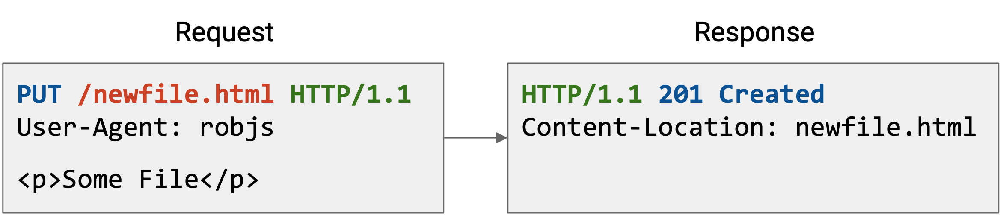
Here are some other examples. Notice that the content section is blank in the GET request, but contains data in the POST and PUT request. Conversely, the POST and PUT responses have no contents, but the GET response does.
The status code and header tells us useful metadata about the request. For example, status 201 Created tells us that the file we send was successfully stored on the server. The header tells us where on the server the file was stored (and we might use that location to retrieve the file later).
Speeding Up HTTP with Pipelining
Loading a single page in your web browser can require several HTTP requests. When you make a request for a YouTube video, your browser has to make separate requests for the video itself, the HTML with the other text on the webpage (e.g. video title, comments), thumbnails of related videos, and so on. Many of these requests probably go to the same server (e.g. YouTube’s server in this case).
Recall that HTTP runs over TCP. In the naive case, every separate request would require starting a new TCP connection with a 3-way handshake. After the request, we close the connection and then immediately re-do a handshake for the next request.
HTTP 1.1 optimized this by allowing multiple HTTP requests and responses to be pipelined over the same connection. Now, we no longer need a separate TCP connection (with a separate handshake) for every request.
One downside to this optimization is, the server now has to keep more simultaneous open connections. The server needs to have some way to time out connections. If the server gets overloaded with open connections, the client might get an error like 503 Service Unavailable. Attackers could exploit this in a denial-of-service attack.
Speeding Up HTTP with Caching: Types
Another strategy for speeding up HTTP is caching responses to avoid making duplicate requests for the same data.
If we don’t cache, every request must reach the server.
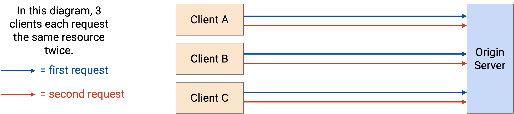
There are three types of HTTP caches:
Private caches are associated with a specific end client connecting to the server (e.g. the cache in your own browser). Now, if the same user requests the same resource a second time, they can fetch the resource from their local cache. However, private caches are not shared between users.
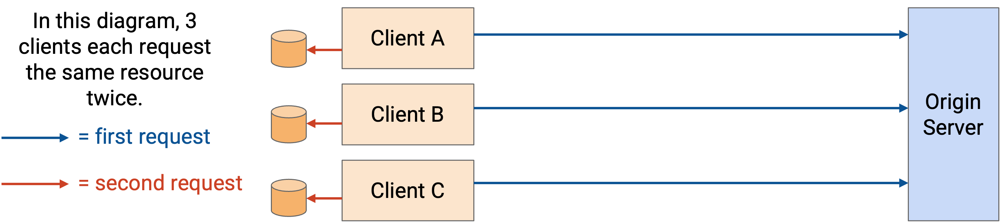
Proxy caches are in the network (not on the end host), and are controlled by the network operator, not the application provider. These caches can be shared between lots of users, so a user requesting a resource for the first time might get the data from the proxy cache instead of the origin server.
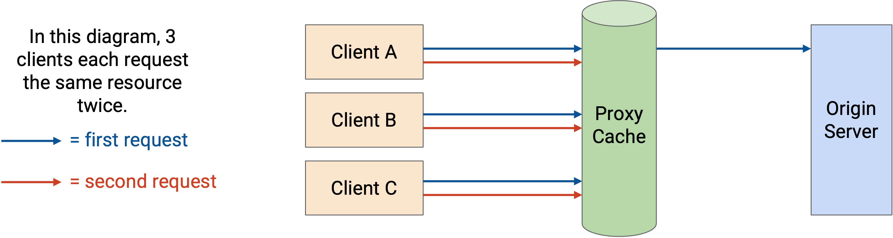
One problem with proxy caches is, the clients need some way to be redirected to the proxy cache. The application isn’t running the proxy cache, so the origin server doesn’t necessarily know about the proxy cache. The network operator needs some way to control the end client to inform them about the proxy cache.
One common approach is lying in DNS responses, which is possible if the network operator controls both the proxy cache and the recursive resolver. When the client makes a request to the origin server, it has to look up the origin server’s IP address. The recursive resolver can lie and say, “The IP address of the origin server is, 1.2.3.4 (proxy cache’s IP address).” Now, requests to the origin server go to the proxy cache instead, who can serve cached responses. Or, if the requested resource isn’t in the proxy cache, the proxy cache can make a request to the origin server, and then the cache can serve the request back to the user.
Another problem with proxy caches is, the application isn’t managing the proxy cache. The origin server has to trust that the proxy cache is doing the right thing (e.g. respecting cache expiry dates, serving the correct data).
Managed caches are in the network, and are controlled by the application provider. Note that managed cache servers are deployed separately, and are not the original server that generated the content. Because these caches are controlled by the application provider, this gives the application more control.
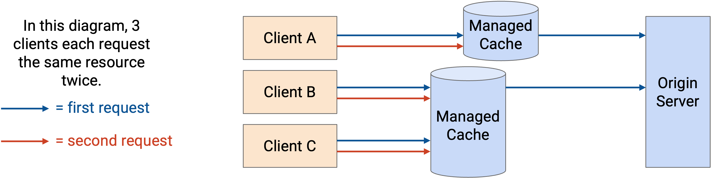
Because applications control both the origin server and the cache, they can redirect users to the caches themselves. For example, if you request a YouTube video page from the origin server, the reply might contain the HTML (video title, comments). The HTML might then include links to specifically fetch the video and images from the proxy caches (e.g. load from static.youtube.com instead of www.youtube.com).
Speeding Up HTTP with Caching: Benefits and Drawbacks
Caching benefits everybody. The client gets to load pages faster, because they can avoid making duplicate requests, and use nearby proxies. The ISPs benefit because there are fewer HTTP requests/responses being sent over the network, so they can build less bandwidth. Servers benefit because users make fewer requests, and they don’t need to process as many requests.
Clients, ISPs, and servers all care about giving good performance to the client. The client wants to watch videos in high quality, and ISPs and applications will get more customers by delivering good performance. Caching helps everybody achieve this, because the client can get their request served more efficiently from a closer cache (local, or in-network), with less latency. Also, recall that TCP throughput and RTT are inversely proportional, so a shorter RTT to a closer server means that we get higher throughput. This is especially helpful for large content like videos.
When thinking about caching, we have to consider whether the content will change on future requests. Some HTTP resources are static. If you make a request for the Google logo, it stays the same across multiple requests.
Other HTTP resources are dynamic. If you make a Google search request, the response might change depending on who asks and when they ask. The server needs to dynamically generate a different response for every request.
Some resources are static and can be cached and served from proxy or managed caches, while other resources must be dynamically generated. For example, if you make a Google search, the HTML response probably needs to be dynamically generated by the origin server. However, the HTML can include a link to fetch the Google logo, a static resource, from one of the managed cache servers.
Conveniently, larger resources like images and videos are static, and can be cached aggressively. Dynamic content, like customized HTML pages, tend to be smaller. Clients can request the dynamic content from the origin server (far away), and use caches and proxies (closer) for all the static content.
Speeding Up HTTP with Caching: Implementation
To implement caching, we’ll need to use headers to carry some metadata about caching (e.g. how long to cache the data). This is another example of headers allowing extensibility of the original protocol (which did not support caching).
The original legacy caching functionality in HTTP/1.0 used the Expires header, which just specified how long the data can be cached. In HTTP/1.1, a more sophisticated Cache-Control header was introduced. To support compatibility, some web servers will return data with both headers. HTTP/1.0 clients won’t understand the newer Cache-Control header and will ignore it. HTTP/1.1 clients will prioritize the newer Cache-Control header over the older Expires header.
The Cache-Control header specifies what types of caches can cache the data, and how long the data can be cached. For example, if the resource is dynamic and changes per user, but stays the same across time for a specific user, then the server could reply with: Cache-Control: private, max-age:86400. This says that this content should only be stored in a user’s local cache (not in shared proxy/managed caches), and can be stored for one day (86400 seconds).
Some data cannot be cached (e.g. dynamic content that changes frequently). In this case, the server can set Cache-Control: no-store to indicate that the client and proxy cannot cache the content.
The Cache-Control header is optional, so there’s no guarantee that the client will read or respect the header. You can think of this header as a request from the server cache something. This is especially a concern for proxy caches, which are not operated by the application provider. By contrast, a private cache is run by the client (i.e. their browser) and breaking rules only affects the client themselves. A managed cache is run by the same application provider, so they can enforce that rules from the origin server are obeyed by the managed caches.
This header can be used for more complex policies as well. For example, the server might say, you can cache this data, but before you use the cached data, please make an HTTP HEAD request to re-request the header and re-validate the data. If the header indicates that the data has changed, invalidate the cache.
Content Delivery Networks (CDNs)
Earlier, we saw that managed caches are a good strategy for caching and improving user performance. Unlike private caches, they’re shared between users (e.g. a user requesting something for the first time can be served by the cache). Also, unlike proxy caches, they’re controlled by the application provider, which gives the application more control. The application can ensure that the caches follow rules set by the origin server, and the origin server can control which caches the user is redirected to.
Deploying managed caches across the network leads us to the idea of content delivery networks (CDNs), which are sets of servers in the network serving content (e.g. HTTP resources).
For good performance, we try to put CDNs close to end users. Here, close means geographically close, but also close from a network perspective (fewer hops).
CDNs give us all the benefits of caching. Users get higher-performance delivery of content, since servers are closer. We can reduce the amount of network bandwidth and infrastructure needed, since users are making most requests to nearby servers instead of a single origin server (possibly far away).
CDNs allow providers to scale their server infrastructure more easily. With a single origin server, we’d have to scale that server by making it incredibly powerful and giving it incredibly high bandwidth. By contrast, with CDNs, we can scale just by adding more small servers throughout the Internet.
CDNs also provide better redundancy for providers. If a single origin server goes down, the service might become unavailable. By contrast, with CDNs, if one server goes down, users can still be redirected to other servers.
CDN Deployment
Recall our model of the Internet: The client’s request is forwarded through WAN routers (owned by the ISP) until it reaches a peering location. Then, the request goes to a peering location in the application provider’s network. The request goes through the application’s WAN networks until it reaches a datacenter network, where the origin server lives.
If we don’t deploy any CDN, every request has to reach the origin server. This has the maximum latency (compared to later options with CDNs), resulting in the lowest performance. Also, this requires the most bandwidth to be traversed, which means we have to build more bandwidth. Finally, this requires the origin server to scale to handle every request.
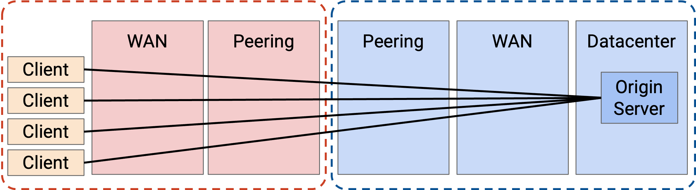
A better option would be to deploy some CDN servers at the edge of the application provider network. For example, if Google’s network peers with ISP networks in New York, we could put some CDNs there.
Now, the amount of bandwidth sent over the application provider’s network is much lower. The origin server sends the video to the CDN once, and the CDN can serve that video to many users. The application network no longer needs to scale its WAN network.
Also, as we saw earlier, we can now scale by adding more CDNs, instead of upgrading a single origin server. We also have more redundancy.
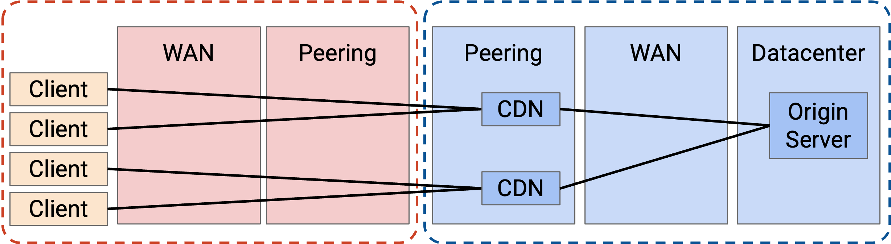
We can do even better and push caching deeper into the network. Now, the application is deploying servers inside the ISP’s network.
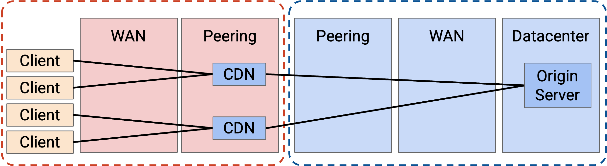
Why would an ISP agree to let the application deploy a CDN in their network? It turns out this is mutually beneficial for everybody. The ISP’s customers will get better performance because they can use this new closer CDN. Also, the heavy traffic between users and the CDN is now all contained within the ISP’s network. This means that ISP needs less bandwidth in the peering connection between the ISP and the application (since the content is sent only once across that peering connection).
In practice, the ISP and CDN often cooperate to deploy servers. For example, the application provides the servers for free, and the ISP connects the server to the network for free. In some cases, the ISP and CDN need to negotiate on some payment (CDN to ISP, or ISP to CDN), depending on where in the network the server is deployed, and the costs of the server and the connectivity. Still, both parties have an interest in deploying these servers.
We could try to go even further, but eventually, we encounter cost-benefit trade-offs. In the most extreme case, we could deploy a CDN in everybody’s home, but the cost probably outweighs the benefit. In particular, CDNs work best when multiple users are using it. The collective cache is larger, and one deployment can reach many users.
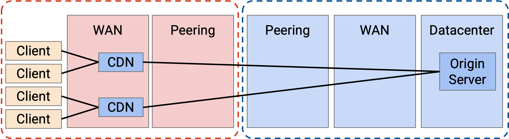
More generally, there’s a trade-off between the cost of adding new CDNs, and the money you save from building less bandwidth. In practice, CDNs do exist in ISP networks because they’re still profitable to install there.
A 2023 Sandvine (packet inspection company) report showed that 15% of all Internet traffic is from Netflix, 11.4% of traffic is from YouTube, and 4.5% is from Disney+. If an ISP installs servers for just these three applications in their network, they could potentially build 25% less network capacity.
Major application providers like Google, Netflix, Amazon, and Facebook deploy CDNs, both in their own networks, and in ISP networks.
If you’re an application provider, you might not be a tech giant like Google or Amazon, but you still want your content to be served through a CDN for good performance. These smaller applications probably can’t afford to install their own CDNs. However, companies like Cloudflare, Akamai, and Edgio have deployed CDNs, and you can pay those companies to deploy your content on their existing CDN. These CDN providers also deploy infrastructure in both their own networks and in ISP networks.
CDNs can also be used by ISPs, because ISPs themselves can also have applications serving content. When you pay for Internet service, the ISP might also offer TV service (live TV, or video on demand). These ISPs install their own CDNs to efficiently serve that TV content to you.
Fundamentally, the servers in CDNs are the same as any other servers on the Internet providing content, though they are often highly optimized for storing and delivering large amounts of content. Some servers might be better at storing and serving large amounts of content, while others might be better at rapidly serving smaller pieces of content to a large number of customers.
Directing Clients to Caches
In a CDN, many different servers throughout the Internet are providing the same content. How does the client know which server to contact?
Some of the tricks from DNS can also apply to CDNs. We could use anycast, where multiple servers advertise the same IP prefix. This allows the routing algorithm to find the best path to any one of the servers.
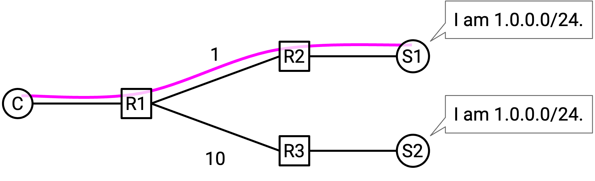
One problem with anycast is with long-running connections. Suppose the client has an ongoing TCP connection with one of the servers. During the connection, some intermediate link in the network fails. Since all the servers have the same IP address, from an intermediate router’s perspective, forwarding to any of the servers is valid. The intermediate router may now start forwarding packets to a different server (with the same IP address). However, the TCP connection was with the original server, and this new server has no way to continue the original connection.
Note that this problem didn’t apply when we used anycast in DNS, because DNS connections are very short (usually just one UDP packet).
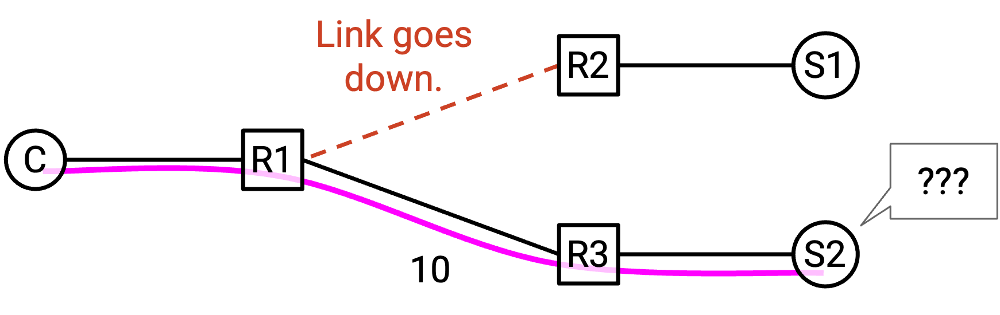
We could also use DNS to load-balance. Unlike in anycast, the servers now have different IP addresses, though they still all have the same domain. When the client queries for the domain-to-IP mapping, the DNS name server can provide a different IP address depending on the client’s location.
This DNS-based approach doesn’t have the same problem with long-lived connections that anycast did, because the servers now have different addresses. The router won’t suddenly start forwarding packets to a different server.
One problem with the DNS-based approach is lack of granularity. As an extreme example, suppose everybody in Comcast’s ISP used the same recursive resolver. This means that everybody sends their DNS queries to the resolver, who then makes the query to the application name server. The application name server can only see that the DNS request came from Comcast, and has to give a single IP address back to Comcast. Now, every user in Comcast’s network is using the same server, even if the users are all over the world.
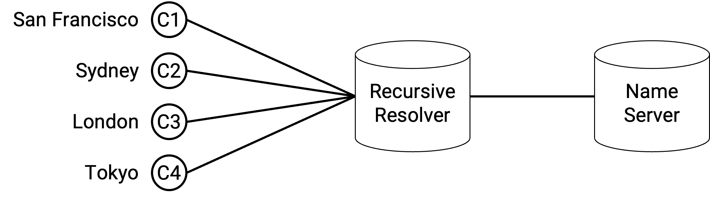
A more robust approach than anycast or DNS is application-level mapping. When the origin server receives an HTTP request, the links in the response can point to different servers (e.g. static1.google.com or static2.google.com, two servers in different places), depending on where the request came from. Or, the origin server can reply with an HTTP 300-level status code to redirect the user to the appropriate server.
This application-level approach doesn’t have the granularity problem of DNS, because the application can see the client’s address in the HTTP request. This also doesn’t have the anycast problem, since different servers can have different IP addresses.
However, just like in DNS load-balancing, the application still needs some way to guess the closest server to the client (where close might be geographic or based on network topology).
One benefit of application-level mapping is additional granularity depending on the content. For example, popular videos can be deployed to lots of servers, allowing every client to get the video from a nearby server. By contrast, unpopular videos that are rarely accessed can be deployed to fewer servers, and require users to go further for the content.
Newer HTTP Versions
As the Internet grew, HTTP started to be used by more and more applications, because it’s a very generalizable protocol.
Eventually, HTTP security became an increasing concern. A bank server running HTTP probably doesn’t want information to be sent in human-readable plaintext over the network, where intermediate routers or malicious attackers can read it.
HTTPS is an extension to HTTP that introduces extra security. A protocol called TLS (Transport Layer Security) is built on top of TCP, where users exchange secret keys and encrypt messages before sending them through the bytestream. HTTPS has the same fundamental protocol, but now runs on top of TLS (which itself is over TCP), instead of directly over raw insecure TCP. In recent years, there’s been a push for websites to upgrade to HTTPS, and as of 2024, over 85% of websites now default to using HTTPS.
HTTP/2.0 was introduced in 2015, and was the first major revision to the protocol since 1997. The main goal of the revision was to improve performance by reducing latency and improving page load speed.
HTTP/2.0 introduced server-side pushing, where the server can send a response even if the client doesn’t make a request. This allows the server to predict and preemptively serve something the user might need, without waiting for the user to make a request. For example, if we make a Google search, the HTML of the results comes back. Then, the user’s browser parses the HTML, realizes it needs the Google logo, and makes another HTTP request. With HTTP/2.0, the server can preemptively give the Google logo to the user, without waiting for the user request.
HTTP/2.0 had other performance improvements. Headers can be compressed to save space. Requests and responses can have priorities set, so that high-priority content (e.g. text of the search results) is delivered before low-priority content (e.g. the Google logo). Simultaneous requests can be multiplexed more efficiently. If the first request has a 4 GB response and the second request has a 1 KB response, a naive implementation might cause the second response to be stuck waiting for the first one to finish. HTTP/2.0 allows for smarter management of these responses.
HTTP/2.0 is widely adopted by both clients (e.g. modern browsers) and servers (e.g. CDNs).
HTTP/3.0 was introduced in 2022 (not long after HTTP/2.0, compared to the gap between 1.1 and 2.0). The semantics are the same as HTTP/2.0, but it replaces the underlying transport layer protocol. Instead of running over the TCP bytestream, HTTP/3.0 runs over a new transport protocol called QUIC, which is custom-built to work well with HTTP/3.0. QUIC = Quick UDP Connections, was designed at Google, and standardized in the IETF.
HTTP/3.0 is an example where we intentionally abandon one of the core networking paradigms (layering) in exchange for better efficiency. By giving designers the freedom to customize both the transport layer (QUIC) and application layer (HTTP/3.0) protocols, we can design both protocols to work well together.